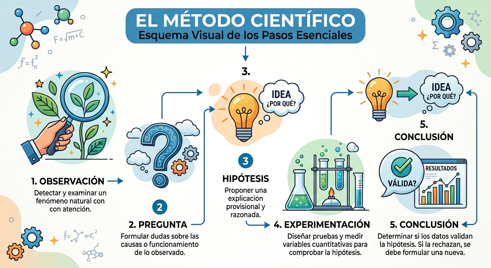
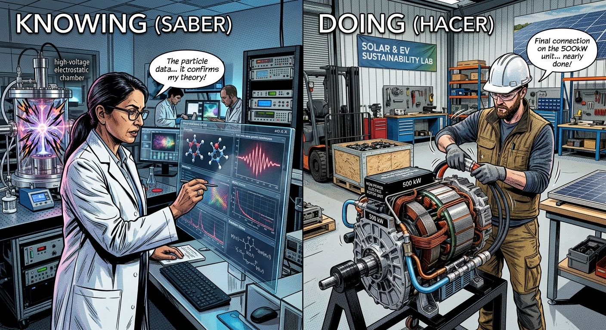
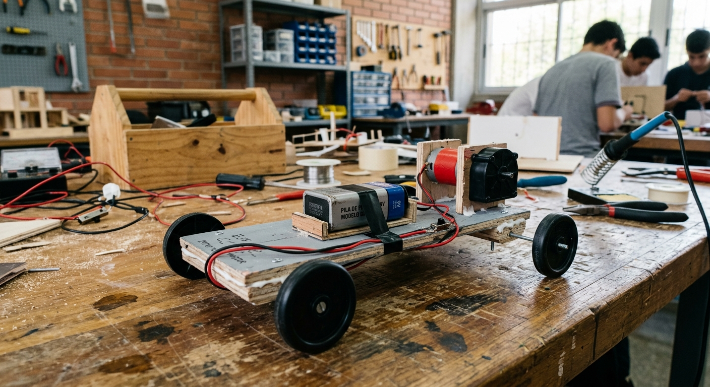
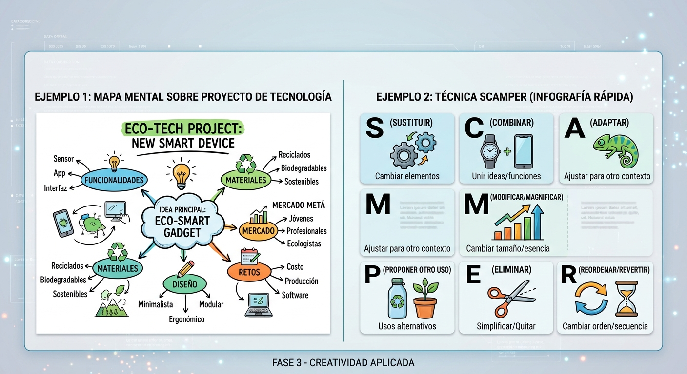
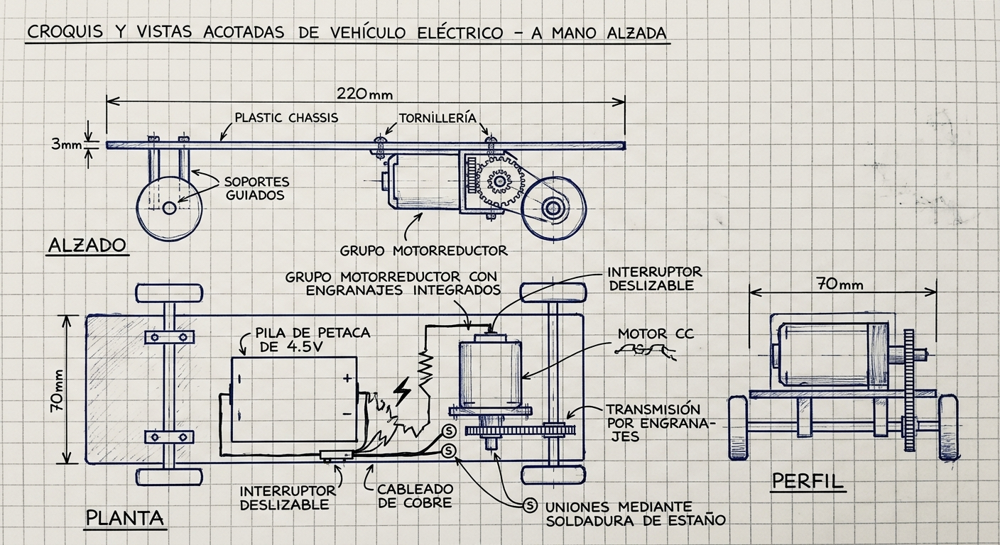
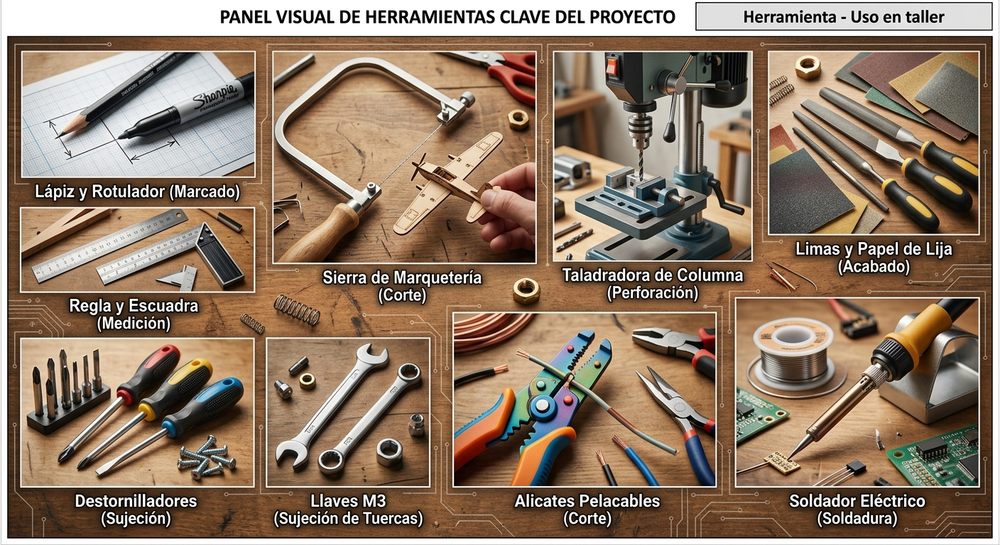
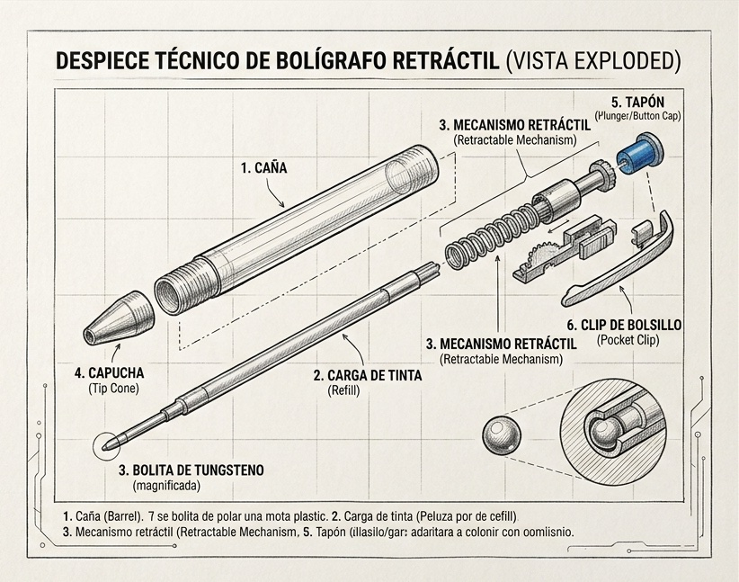

CIENCIA Y TECNOLOGÍA: DOS CAMINOS COMPLEMENTARIOS
1.1. ¿Qué es la Ciencia?
Durante milenios, la humanidad intentó explicar fenómenos como el rayo, las estaciones o las enfermedades a través de mitos y voluntades divinas. Sin embargo, hace unos 2.500 años en la antigua Grecia, nació una idea revolucionaria: la naturaleza no actúa por capricho, sino que sigue unas leyes inmutables.
Para descubrir estas leyes, en el siglo XVII se consolidó el método científico, una metodología rigurosa para adquirir conocimiento objetivo.
Esquema del Método Científico
- 1. Observación: Detectar y examinar un fenómeno natural con atención.
- 2. Pregunta: Formular dudas sobre las causas o funcionamiento de lo observado.
- 3. Hipótesis: Proponer una explicación provisional y razonada.
- 4. Experimentación: Diseñar pruebas y medir variables cuantitativas para comprobar la hipótesis.
- 5. Conclusión: Determinar si los datos validan la hipótesis. Si la rechazan, se debe formular una nueva.

Definición: La Ciencia es el conjunto de conocimientos estructurados sistemáticamente sobre el universo, obtenidos mediante la observación y la experimentación. Su producto final es el saber.
1.2. ¿Qué es la Tecnología?
A diferencia de otros animales, el ser humano carece de garras afiladas, pelaje espeso o gran velocidad. Para sobrevivir, nuestra especie utilizó la inteligencia para transformar el entorno: convirtió rocas en cuchillos, pieles en abrigo y cuevas en refugios.
Definición: La Tecnología es la aplicación coordinada de un conjunto de conocimientos científicos y habilidades prácticas para crear soluciones (objetos, sistemas o servicios) que satisfagan las necesidades humanas o resuelvan problemas prácticos. Su producto final es el hacer y el transformar.
1.3. Relación entre Ciencia y Tecnología: La Tecnociencia
Aunque a menudo se confunden, sus objetivos son completamente diferentes:
| Criterio | Ciencia | Tecnología |
|---|---|---|
| Objetivo | Buscar la verdad y comprender el universo. | Resolver problemas prácticos y mejorar la vida. |
| Resultado | Leyes, teoremas, modelos teóricos. | Productos, máquinas, herramientas, procesos. |
| Verbo clave | Saber | Hacer/Crear |
Una relación de doble sentido:
- La ciencia apoya a la tecnología: Para diseñar un motor eléctrico, un ingeniero necesita conocer las leyes del electromagnetismo descubiertas por la ciencia.
- La tecnología apoya a la ciencia: Para descubrir el Higgs o estudiar galaxias lejanas, los científicos necesitan instrumentos tecnológicos complejos (microscopios electrónicos, telescopios espaciales o aceleradores de partículas).
Hoy en día, ambas disciplinas están tan estrechamente ligadas que los especialistas utilizan el término Tecnociencia.

EL MÉTODO TECNOLÓGICO: EL PROCESO DE PROYECTOS
Así como la ciencia utiliza el método científico, la tecnología utiliza su propio método de trabajo: el Proceso Tecnológico (o Método de Proyectos). Es una secuencia ordenada de fases para pasar de un problema a una solución eficaz.
Fases del Proceso Tecnológico
A lo largo de este tema aplicaremos cada fase a un proyecto de taller: La construcción de un coche eléctrico de juguete.

FASE 1: Descripción del problema (Condicionantes)
Consiste en redactar con máxima precisión la necesidad a resolver y los límites o restricciones impuestas (tiempo, presupuesto, materiales, espacio).
Ejemplo de propuesta en el taller:
Diseñar y construir un vehículo eléctrico de juguete que cumpla con los siguientes condicionantes:
- Debe recorrer al menos 10 metros en línea recta.
- Se construirá únicamente con las herramientas y materiales disponibles en el taller.
- Estará accionado por un motor de Corriente Continua (CC) de 3V a 6V.
- La fuente de energía será una pila de petaca (4.5V).
- Dispondrá de un interruptor para encendido/apagado.
- En esta primera fase, el chasis quedará al descubierto (sin carrocería).
FASE 2: Búsqueda de información
Antes de inventar nada, debemos investigar qué soluciones existen y aprender la teoría necesaria.
- Internet y repositorios: Analizar proyectos similares creados por otros estudiantes o inventores.
- Consulta bibliográfica: Repasar conceptos teóricos de electricidad (circuitos en serie), mecánica (transmisiones por poleas o engranajes) y propiedades de los materiales.
- Catálogos técnicos: Consultar componentes comerciales en la aula-taller (reductoras, ruedas, soportes).
- Entrevistas a expertos: Preguntar a profesores, profesionales o compañeros de cursos superiores.
FASE 3: Diseño y concreción de la solución
Esta es la fase de generación de ideas. Para no quedarnos con la primera opción que se nos ocurra, aplicamos técnicas de creatividad individual y grupal.
A. Lluvia de Ideas (Brainstorming)
Técnica grupal donde todos los miembros del equipo proponen ideas de forma libre.
Regla de oro: Queda prohibido criticar o juzgar las ideas durante la sesión. Las ideas más descabelladas pueden activar la solución definitiva en otro compañero.
B. Mapas Mentales
Diagramas visuales que organizan la información alrededor de un problema central. Ayudan a conectar ideas sobre materiales, mecanismos, formas y sistemas de energía de forma gráfica.
C. Técnica SCAMPER
Lista de preguntas para transformar una idea existente en una nueva:
- Sustituir: ¿Puedo cambiar plástico por madera?
- Combinar: ¿Puedo unir el motor al chasis en una sola pieza?
- Adaptar: ¿Puedo usar tapones de botella como ruedas?
- Modificar: ¿Y si hago la estructura más estrecha?
- Proponer otros usos.
- Eliminar: ¿Puedo quitar componentes innecesarios?
- Reordenar / Reorganizar.

De todas las ideas generadas, seleccionamos la más viable (evaluando coste, tiempo de ejecución y dificultad constructiva) y la desarrollamos técnicamente usando el lenguaje gráfico.
- Esbozo: Dibujo rápido a mano alzada, no acotado, para plasmar las primeras ideas generales.
- Croquis: Dibujo a mano alzada más elaborado, proporcionado y acotado (con medidas reales expresadas en milímetros). Muestra las vistas principales del objeto (Alzado, Planta y Perfil).
- Planos técnicos: Dibujos delineados con instrumental (regla, escuadra, compás o programas CAD), a escala estandarizada, acotados y procesados para que cualquiera pueda construir la pieza sin dudas.
- Memoria descriptiva: Redacción explicativa del diseño final en texto.
Ejemplo de descripción de la solución elegida:
Vehículo eléctrico con chasis plano de plástico rígido de 220×70 mm y 3 mm de grosor. Tracción trasera mediante un grupo motorreductor fijado con tornillería. Transmisión por engranajes integrados para reducir las revoluciones y aumentar el par motor. Eje delantero libre montado sobre dos soportes guiados. Circuito eléctrico simple formado por pila de petaca de 4.5V, interruptor deslizable, motor CC y cableado de cobre unido mediante soldadura de estaño.

FASE 4: Planificación del trabajo
Antes de entrar al taller, es imprescindible rellenar los documentos de gestión para repartir tareas, prever costes y organizar las fases de fabricación.
Ficha 1: Presupuesto y Relación de Materiales
| Material | Función | Cantidad |
|---|---|---|
| Placa de plástico (3 mm) | Chasis base | 1 un. (154 cm²) |
| Grupo motorreductor CC | Propulsión mecánica | 1 un. |
| Eje metálico (Ø 3 mm) | Eje delantero | 1 un. (110 mm) |
| Ruedas de plástico (Ø 55 mm) | Apoyo y rodadura | 4 un. |
| Pila de petaca (4.5V) | Fuente energía | 1 un. |
| Interruptor de palanca | Control encendido | 1 un. |
| Cable conductor flexible | Conexión eléctrica | 20 cm |
| Soportes para eje | Fijación de ejes | 2 un. |
| Tornillos, tuercas, arandelas (M3) | Uniones desmontables | 4 juegos |
| Cinta adhesiva / Bridas | Fijación de la pila | 25 cm |
| Hilo de estaño para soldar | Unión permanente | 4 cm |
Ficha 2: Hoja de Herramientas y Útiles
| Herramienta | Uso en taller |
|---|---|
| Lápiz y rotulador permanente | Marcado de cotas |
| Regla metálica y escuadra | Medición y trazado |
| Sierra de marquetería / metal | Corte del panel |
| Limas y papel de lija | Desbarbado y acabado |
| Taladradora columna / manual | Perforación de agujeros |
| Destornillador estrella / plano | Apriete tornillería |
| Llave fija o de tubo (M3) | Sujeción de tuercas |
| Alicates pelacables / Tijeras | Corte de conductores |
| Soldador eléctrico lapicero | Soldadura blanda estaño |

Ficha 3: Hoja de Procesos
| Nº | Tarea | Herramientas | Tiempo |
|---|---|---|---|
| 1 | Trazar chasis (220x70 mm) | Regla, escuadra, rotulador | 10 min |
| 2 | Cortar chasis y lijar rebabas | Sierra, lima y lija | 25 min |
| 3 | Marcar y taladrar orificios | Taladro, broca 3 mm | 15 min |
| 4 | Montar soportes eje delantero | Destornillador y llave fija | 10 min |
| 5 | Insertar eje y ruedas delanteras | Ajuste manual | 5 min |
| 6 | Fijar grupo motorreductor | Destornillador y llave fija | 15 min |
| 7 | Montar ruedas motrices traseras | Ajuste manual | 5 min |
| 8 | Fijar interruptor y pila al chasis | Cinta adhesiva / Bridas | 10 min |
| 9 | Conexiones según esquema | Soldador, estaño, pelacables | 30 min |
| 10 | Verificar funcionamiento | Multímetro / Inspección | 10 min |
FASE 5: Construcción
Es la fase de ejecución práctica en la aula-taller. Se llevan a cabo las operaciones planificadas respetando siempre dos pautas fundamentales:
1. Seguridad y Salud
Uso obligatorio de gafas protectoras en el taladro, sujeción firme con tornillo de banco y precaución con el soldador.
2. Trabajo en equipo
Reparto equitativo de roles (coordinador, herramientas, seguridad, materiales) con respeto y cooperación.
FASE 6: Evaluación y Control de Calidad
Terminada la construcción, se somete el objeto a pruebas operativas para comprobar si cumple las condiciones iniciales de la Fase 1.
Informe de Evaluación del Coche Eléctrico:
Prueba de rendimiento: El vehículo ha recorrido 12.5 metros en línea recta, superando los 10 metros exigidos.
Análisis de fallos y propuestas de mejora:
- Desviación: Tiende a girar levemente a la izquierda. Solución: Recomprobar alineación del eje delantero.
- Ruido mecánico: Transmisión ruidosa. Solución: Aplicar grasa de silicona o correa de goma.
- Pérdida de tracción: Ruedas traseras deslizan al arrancar. Solución: Fijar eje con prisioneros o cianocrilato.
ANÁLISIS TÉCNICO DE OBJETOS TECNOLÓGICOS
El análisis de objetos es el proceso inverso al diseño: consiste en desarmar conceptualmente un producto existente para comprender su diseño, funcionamiento e impacto.
{kind=link}
Estructura del Análisis de Objetos
3.1. Análisis Formal (Anatomía y Geometría)
Estudia la forma exterior, la estructura y la representación gráfica del objeto.
- Piezas: Lista detallada de los componentes individuales que integran el conjunto.
- Forma: Geometría global (cilíndrica, prismática, esférica) y estudio ergonómico (adaptación a las formas del cuerpo humano).
-
Vistas: Dibujo técnico en sistema diédrico:
- Alzado: Vista frontal principal.
- Planta: Vista superior.
- Perfil: Vista lateral (izquierda o derecha).
- Dimensiones: Mediciones principales (largo, ancho, alto) expresadas en milímetros.

3.2. Análisis Funcional
Explica la utilidad del producto y las leyes físicas que aplica.
- Función global: ¿Para qué sirve el objeto? ¿Cuál es su utilidad principal?
- Principios científicos: Fenómenos físicos implicados (rozamiento, efecto palanca, conducción eléctrica, presión hidráulica).
- Función de elementos componentes: Papel específico que desempeña cada pieza dentro del conjunto.
- Seguridad y uso: Evaluación de los riesgos operativos (cortes, descargas, atrapamientos) y sistemas de protección incorporados.
3.3. Análisis Técnico
Centrado en el estudio industrial y de fabricación.
- Materiales: Identificación de los materiales utilizados (plásticos, metales, maderas, cerámicas) y justificación de sus propiedades (rigidez, tenacidad, aislamiento eléctrico, densidad).
- Procesos de conformación: Técnicas para dar forma a las piezas (moldeo por inyección, mecanizado, estampación, extrusión).
-
Ensamblado: Tipo de uniones empleadas:
- Uniones fijas: Pegado, remachado, soldadura.
- Uniones desmontables: Tornillos, roscas, pasadores, encajes a presión.
- Acabados superficiales: Tratamientos de protección o embellecimiento (barnizado, pulido, pintado, galvanizado).
3.4. Análisis Socioeconómico
Estudia la repercusión social, ecológica y comercial del objeto.
- Necesidad cubierta: Problema humano que resuelve (comunicación, transporte, confort, sanidad).
- Evolución histórica: Antecedentes del objeto, origen y cómo las innovaciones tecnológicas han cambiado su diseño con el tiempo.
- Impacto ambiental: Análisis del ciclo de vida (origen de las materias primas, consumo de energía durante su uso, reciclabilidad de sus piezas y generación de residuos al final de su vida útil).
- Economía de mercado: Precio de venta estimado, relación calidad-precio y comparativa con productos competidores directos.
!Ponte a prueba con el Test Final!
Comprueba lo aprendido sobre la ciencia, la tecnología, el proceso tecnológico y el análisis de objetos en este cuestionario interactivo.